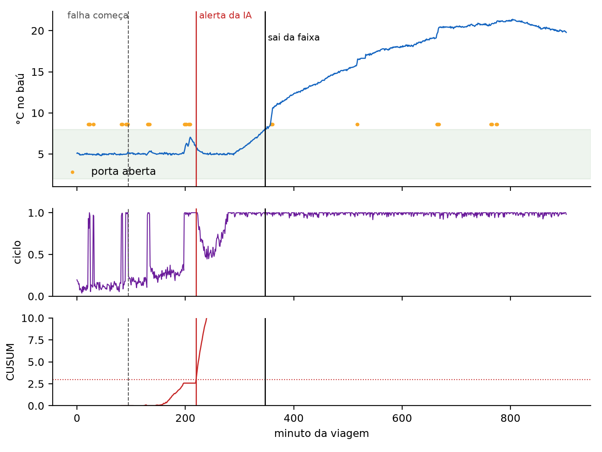
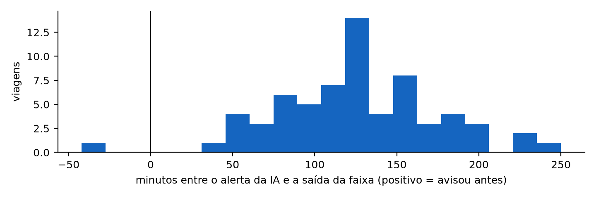

Vacinas, laticínios e carnes viajam em baús refrigerados com uma faixa de temperatura estreita. Vacina fica entre 2 e 8 °C. Quando a carga sai da faixa por tempo demais, ela é descartada, e no caso de medicamentos o risco vai para o paciente.
Hoje o monitoramento mais comum é um registrador de temperatura com alarme de limite. Ele tem dois problemas. O primeiro é que avisa tarde: quando a temperatura passa de 8 °C, a carga já está sendo danificada. O segundo é que avisa demais: cada entrega abre a porta, o ar quente entra e a temperatura passa do limite por alguns minutos. Na nossa simulação, o alarme simples tocou em 18 de 80 viagens sem nenhum problema real. Quem recebe esse alarme todo dia aprende a ignorar.
A proposta é usar os dados que o baú já pode enviar para avisar antes. Um compressor perdendo eficiência não deixa a temperatura subir logo de cara, porque o termostato compensa e o deixa ligado mais tempo. Essa mudança no ciclo do compressor aparece horas antes da temperatura. Um modelo que aprende o ciclo normal para cada situação de calor consegue ver a diferença.
Sensores e simulação. Não tínhamos caminhões, então construímos um simulador. Cada baú tem isolamento e capacidade de refrigeração sorteados e segue um balanço térmico minuto a minuto: o calor entra pelas paredes e pela porta aberta, e o compressor retira até o limite da sua capacidade. A temperatura externa segue o ciclo do dia. As rotas saem do CD de Porto Alegre e passam por 5 a 8 cidades da região (Canoas, Novo Hamburgo, Lajeado e outras), com 1 ou 2 aberturas de porta curtas em cada entrega. O simulador também coloca os defeitos comuns de sensor: picos absurdos (85 °C, -40 °C) e buracos de leitura de 2 a 15 minutos.
Três tipos de viagem: normal; compressor que começa a perder eficiência num minuto sorteado e chega a 5% a 25% do normal em 2,5 a 5 horas; e porta mal fechada na saída de uma entrega, que fica aberta de 20 a 45 minutos com o caminhão andando. O gabarito de cada viagem fica salvo, mas não chega ao sistema de monitoramento.
Borda. O gateway do caminhão recebe a leitura bruta. Valores fora da faixa física ou saltos de mais de 5 °C em um minuto são tratados como pico e descartados. Leitura ausente é estimada com a última válida por até 10 minutos e marcada como estimada; depois disso fica ausente. Essa é a estratégia que discutimos na Atividade 2: repetir a última leitura serve para buracos curtos de uma grandeza que muda devagar, mas não para buracos longos. A borda também liga um alarme local quando a temperatura passa 2 °C do máximo, porque esse alarme tem que funcionar mesmo sem sinal de celular.
Comunicação. Simulador, borda e nuvem conversam por MQTT (Mosquitto em Docker), com um tópico por caminhão e etapa. Usamos QoS 1 porque o sinal cai na estrada e uma leitura perdida pode esconder uma excursão. Como QoS 1 pode entregar a mesma mensagem duas vezes, a nuvem descarta minutos repetidos.
Modelo de ciclo. Um gradient boosting (HistGradientBoostingRegressor, scikit-learn) prevê qual fração do minuto o compressor deveria ficar ligado, a partir de quatro atributos: diferença entre a temperatura externa e o setpoint, desvio da temperatura interna, porta aberta e minutos de porta aberta nos últimos dez. Ele foi treinado com 40 viagens normais da frota (cerca de 27 mil minutos) e erra em média 0,036 no ciclo. Como cada baú é um pouco diferente, na primeira hora de cada viagem o monitor calcula um fator de calibração daquele baú.
Detecção. A cada minuto, o monitor acumula o excesso do ciclo medido sobre o previsto com CUSUM, uma soma que só cresce quando o excesso passa de uma folga (0,06) e volta para zero quando o compressor se comporta. Quando a soma passa de 3, o alerta de deriva dispara. Os minutos com porta aberta e os dez seguintes ficam de fora. Depois que o baú se recupera de uma entrega, o desvio de temperatura usado na previsão é limitado a 0,5 °C, pelo motivo explicado na seção 4. Em paralelo, três outras análises: porta aberta com o caminhão fora de um ponto de entrega por 3 minutos (ou por 12 minutos numa entrega); previsão de quando a temperatura sai da faixa, por tendência linear, quando o compressor já está no limite; e vida útil restante pelo modelo Q10, em que a degradação dobra ou triplica a cada 10 °C acima do setpoint.
Metodologia de avaliação. Separamos sementes do simulador em três conjuntos: treino do modelo (40 viagens normais), ajuste dos parâmetros (80 viagens) e teste (200 viagens: 80 normais, 70 com falha de compressor e 50 com porta mal fechada). Os parâmetros foram escolhidos olhando só o conjunto de ajuste. O teste rodou três vezes, pelo motivo explicado na seção 4. Comparamos com dois alarmes clássicos: o limite simples, que toca na primeira leitura acima do máximo, e um limite que ignora os 15 minutos depois de cada abertura de porta, para não tocar nas entregas. Consideramos que a carga saiu da faixa no primeiro minuto em que a temperatura real passa do máximo sem porta aberta nos 15 minutos anteriores.
O código está em Python, organizado como pacote (src/frio) com uma linha de comando: frio treinar, frio avaliar, frio demo e frio painel. Usa pandas e NumPy para os dados, scikit-learn para o modelo, paho-mqtt para a comunicação, SQLite para guardar as leituras e os alertas, Parquet para os dados da avaliação e Streamlit com Plotly para o painel. Há 14 testes automatizados (pytest) cobrindo a limpeza da borda, o simulador e o monitor.
O painel mostra a frota no mapa, com cor por situação; um cartão por caminhão com temperatura, faixa da carga, eficiência estimada do compressor e vida útil restante em dias; a lista de alertas com a ação sugerida; e os gráficos da viagem escolhida (temperatura, ciclo e CUSUM). Ele se atualiza a cada 2 segundos enquanto a demo roda.
Cada alerta vem com uma ação. Na deriva do compressor, a mensagem diz quanto ele está rendendo (por exemplo, "cerca de 61% do normal"), que a carga ainda está na faixa e sugere antecipar as entregas restantes e agendar manutenção. Na previsão de violação, sugere desviar para o centro de distribuição mais próximo, calculado pelo GPS. Na porta, sugere ligar para o motorista.
| Conjunto de teste (200 viagens) | IA | Limite simples | Limite que ignora entregas |
|---|---|---|---|
| Viagens normais com alarme falso (de 80) | 0 | 18 | 0 |
| Porta mal fechada que também recebeu alerta de compressor (de 50) | 3 | não se aplica | não se aplica |
| Compressor: falhas detectadas (de 70) | 70 | 69 | 66 |
| Compressor: avisou antes de a carga sair da faixa (de 66) | 65 | 63* | 3 |
| Compressor: antecedência mediana | 124 min | 19 min* | 0 min |
| Porta mal fechada: detectadas (de 50) | 50 | 50 | 26 |
| Porta mal fechada: atraso mediano | 2 min | 7 min | 48 min |
* O limite simples só parece avisar antes porque toca nas aberturas de porta das entregas, que por acaso acontecem depois do início da falha. São os mesmos disparos que geram os 18 alarmes falsos, e quem recebe não tem como saber se é entrega ou compressor.
O resultado principal é a antecedência. Na mediana, a IA avisou 124 minutos (cerca de duas horas) antes de a carga sair da faixa, sem nenhum alarme falso nas 80 viagens normais. O limite que ignora as entregas também não dá alarme falso, mas avisa no momento em que a carga já saiu da faixa, porque é exatamente isso que ele mede. Ou seja, o alarme comum fica entre tocar demais e tocar tarde, e o modelo sai dessa troca porque olha um sinal diferente.


O teste rodou três vezes, e as duas primeiras mostraram defeitos do método. Na primeira, uma falha de compressor numa viagem de carnes passou sem alerta: o CUSUM chegou perto do limite e voltou a zero enquanto a carga esquentava até 18 °C. O modelo tinha aprendido com as entregas que, com o baú quente, o compressor fica no máximo. Então, com o baú quente por causa da falha, achava normal o compressor no máximo, e o excesso sumia. Corrigimos limitando o desvio de temperatura que o modelo recebe quando o baú já deveria estar no setpoint. Na segunda rodada, essa correção pegou todas as falhas, mas na demo apareceu outro problema: depois de uma porta aberta por 40 minutos, o baú leva mais de 15 minutos para esfriar, e o monitor confundia essa recuperação com o compressor falhando. Passamos a aplicar o limite só depois que a temperatura volta ao setpoint (ou depois de 45 minutos sem porta) e a contar como falso todo alerta de tipo errado. A tabela é da terceira rodada. Nela, a viagem de carnes passa a ter alerta, mas 42 minutos depois de a carga sair da faixa, e 3 das 50 viagens de porta ainda recebem um alerta de compressor depois de a porta fechar. Na primeira rodada foram 69 de 70 falhas detectadas, 65 de 66 avisadas antes e 125 minutos de mediana. Como usamos o teste para achar esses defeitos, ele deixou de ser totalmente independente, e por isso registramos as três rodadas.
Em quatro viagens a IA detectou a falha de compressor mesmo sem a carga chegar a sair da faixa. Esse caso é bom: a manutenção é agendada antes do problema.
Na porta mal fechada, o ganho é a regra com GPS. Porta aberta numa entrega é normal; porta aberta com o caminhão andando não é. A IA avisou em 2 minutos na mediana. Aqui a lógica é uma regra, não aprendizado de máquina, e achamos que esse é o certo: quando a regra é clara e explicável, não precisa de modelo.
A borda funcionou como esperado nos testes: os picos de 85 °C e -40 °C nunca chegaram à nuvem e não geraram alarme, e os buracos curtos foram preenchidos e marcados. No teste de carga do pipeline, com 120 minutos simulados por segundo, a primeira versão perdia mensagens porque o broker descartava a fila quando a nuvem atrasava. Aumentamos a fila do Mosquitto e a nuvem passou a gravar no SQLite em modo WAL; depois disso nenhuma leitura se perdeu (3.218 de 3.218 nas quatro viagens da demo).
A principal lição é que o valor veio de escolher o sinal certo, mais do que do modelo. Com só a temperatura, nenhum algoritmo consegue avisar duas horas antes, porque a temperatura não muda enquanto o termostato compensa. O ciclo do compressor muda. Isso conversa com o que vimos na disciplina sobre IoT e IA: o sensor resolve o "o que está acontecendo", o modelo resolve o "o que isso significa".
A segunda é que nem tudo precisa de IA. A porta é uma regra com GPS, a vida útil é um modelo físico (Q10), e a limpeza da borda são regras simples. Usamos aprendizado de máquina só onde a relação entre as variáveis é difícil de escrever à mão.
A terceira é sobre avaliar com honestidade. Separar sementes de treino, ajuste e teste evitou que a gente ajustasse os parâmetros olhando o resultado final, e olhar um por um os casos que falharam achou um defeito que a média escondia. Mostrar o limite simples ao lado também foi importante, porque à primeira vista ele parecia avisar antes, quando na verdade estava só tocando nas entregas.
O limite mais importante do trabalho é que os dados são simulados. A física do baú é simples e a falha do compressor segue uma curva bem comportada. O próximo passo seria testar com dados reais de uma frota, e o ciclo do compressor teria que vir do controlador do equipamento de refrigeração ou de um sensor de corrente no compressor, que é barato. Também valeria trocar a regra de porta por pontos de entrega vindos do sistema de roteirização, em vez de uma lista fixa.